เริ่มต้นใช้งาน
- เปิดลิงก์ของระบบ ถ้า browser ขอชื่อผู้ใช้และรหัสผ่าน ให้ใส่ชื่ออะไรก็ได้ และใส่รหัสผ่านที่แอดมินแจ้ง
- หน้าแรกคือ รายการโปรเจกต์ กดชื่อโปรเจกต์เพื่อเปิด หรือกด + สร้างโปรเจกต์ใหม่ มุมขวาบน
- ปุ่ม English / ภาษาไทย สลับภาษาของหน้าจอ
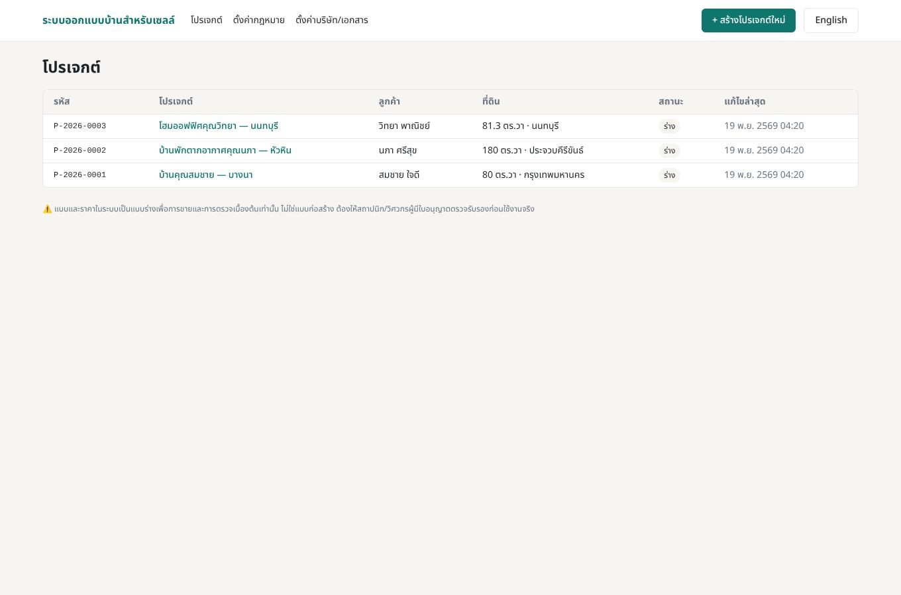
กรอกโจทย์ลูกค้า
ปุ่ม + สร้างโปรเจกต์ใหม่กรอกระหว่างคุยกับลูกค้าได้เลย ช่องที่มี * จำเป็นต้องกรอก
| ส่วน | กรอกอะไร |
|---|---|
| ข้อมูลลูกค้า | ชื่อ เบอร์ อีเมล หมายเหตุ |
| ที่ดิน | หน้ากว้าง × ลึก (ม.) หรือพิกัดมุมถ้าที่ดินไม่เป็นสี่เหลี่ยม · ขนาดตามโฉนด (ตร.วา) · ทิศที่หน้าที่ดินหันไป · ถนนที่ติดและความกว้าง · จังหวัด/เขต · สีผังเมือง เช่น ย.3 |
| ความต้องการ | ประเภทอาคาร สไตล์ จำนวนชั้น ห้องนอน ห้องน้ำ ที่จอดรถ ห้องพิเศษ พื้นที่ใช้สอยโดยประมาณ |
| งบประมาณ | ต่ำสุด–สูงสุด (บาท) |
| ลูกค้าเล่าอะไรมา | พิมพ์ตามที่ลูกค้าพูด เช่น "พ่อแม่อายุเยอะ อยากได้ห้องนอนชั้นล่าง ไม่อยากร้อน" AI จะนำไปใช้ตอนออกแบบ |
ทิศของหน้าที่ดิน สำคัญมาก AI ใช้ข้อมูลนี้เลี่ยงไม่ให้ห้องนอนรับแดดบ่ายทิศตะวันตก ส่วน สีผังเมือง ใช้ตรวจ FAR/OSR ถ้ายังไม่รู้ เว้นไว้ก่อนได้
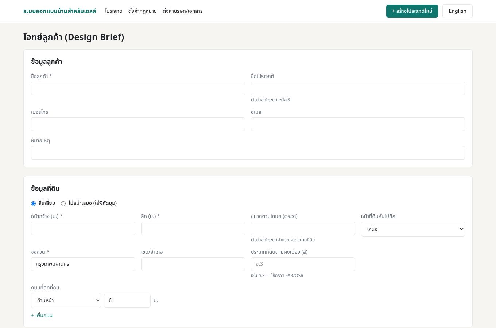
แก้โจทย์ภายหลังได้ที่ปุ่ม แก้ไขโจทย์ ในหน้าโปรเจกต์
ให้ AI ออกแบบ 3 ทางเลือก
หน้าโปรเจกต์ → แบบ / เวอร์ชัน- กด ✨ ให้ AI ออกแบบ 3 ทางเลือก ระบบออกแบบ 3 แนวทางพร้อมกัน: A คุ้มค่า, B สมดุล, C เน้นพื้นที่
- รอแบบละประมาณ 1–4 นาที ระหว่างรอระบบจะตรวจแปลนและให้ AI แก้ซ้ำเองจนผ่าน
- แต่ละการ์ดแสดงแปลนทุกชั้น พื้นที่ใช้สอย ราคาประมาณ ผลตรวจแปลน ข้อดี และข้อควรพิจารณา
- กด เลือกแบบนี้ กับแบบที่ลูกค้าชอบ แบบนั้นจะกลายเป็นเวอร์ชันถัดไป ส่วนแบบที่ไม่ใช้กด ลบ ได้
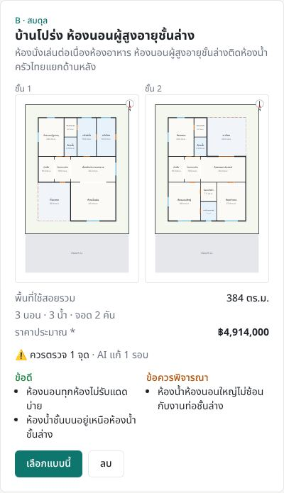
สั่งแก้ด้วยข้อความ
ใต้แปลนมีช่อง สั่งแก้ด้วยข้อความ พิมพ์ภาษาพูดได้ เช่น "ขยายห้องนั่งเล่นอีก 1 เมตร", "ย้ายห้องน้ำไปติดห้องนอนใหญ่", "เพิ่มห้องพระชั้น 2" ทุกครั้งที่แก้จะได้เวอร์ชันใหม่
หน้าโปรเจกต์
ทุกอย่างของลูกค้ารายนี้อยู่ในหน้านี้ เรียงจากบนลงล่าง:
- ที่ดิน ผังที่ดิน เส้นประแดงคือพื้นที่ที่สร้างได้หลังหักระยะร่นตามกฎ ขนาดเป็น ตร.วา และ ไร่-งาน-วา
- ความต้องการ สรุปโจทย์และสิ่งที่ลูกค้าเล่า
- สถานะและการอนุมัติ แถบ 7 ขั้น พร้อมปุ่มของขั้นที่ต้องทำตอนนี้
- ใบเสนอราคา / สัญญา ออกใบใหม่และดูใบที่เคยออก
- แบบ / เวอร์ชัน ทางเลือกจาก AI, แถบเวอร์ชัน v1 v2 …, ปุ่มแก้แปลน 2D / วัสดุและราคา / DXF, สรุปพื้นที่ และผลตรวจ
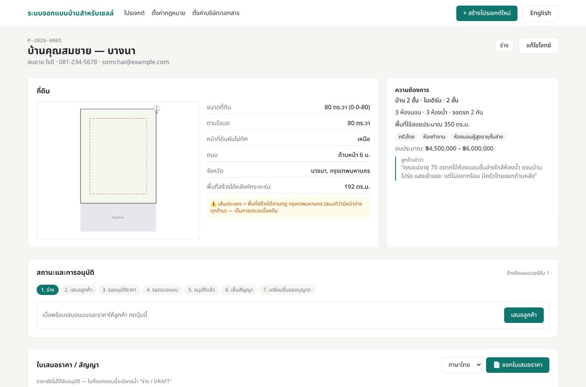
ราคาที่ยังไม่ได้อนุมัติจะมีป้าย ร่าง / DRAFT กำกับไว้เสมอ
แก้แปลน 2D
ปุ่ม ✏️ แก้ไขแปลน 2D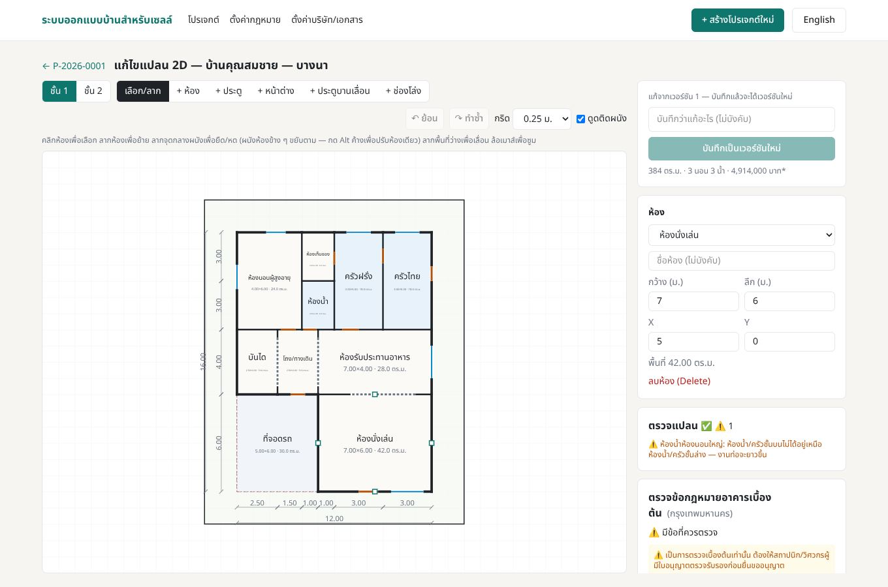
| ต้องการ | ทำอย่างไร |
|---|---|
| ย้ายห้อง | ลากห้อง ห้องจะดูดติดกับผนังห้องข้าง ๆ และกริดให้เอง |
| ยืด/หดห้อง | คลิกเลือกห้อง แล้วลากจุดสี่เหลี่ยมกลางผนัง ห้องอีกฝั่งของผนังจะขยับตาม ถ้าต้องการปรับห้องเดียว กด Alt ค้าง |
| ใส่ขนาดเป็นตัวเลข | พิมพ์กว้าง/ลึก/X/Y ในแผงด้านขวา |
| เพิ่มห้อง | กด + ห้อง เลือกประเภท แล้วลากวาดบนแปลน |
| เพิ่มประตู/หน้าต่าง | กด + ประตู + หน้าต่าง + ประตูบานเลื่อน + ช่องโล่ง แล้วคลิกบนผนัง |
| เลื่อนประตู/หน้าต่าง | ลากไปตามผนัง หรือพิมพ์ขนาดในแผงด้านขวา |
| ลบ | เลือกแล้วกด Delete |
| ย้อน/ทำซ้ำ | Ctrl+Z / Ctrl+Shift+Z |
| เลื่อนทีละช่อง | ปุ่มลูกศรบนคีย์บอร์ด |
| ซูม/เลื่อนมุมมอง | ล้อเมาส์ซูม · ลากพื้นที่ว่างเพื่อเลื่อน |
ด้านขวาจะ ตรวจแปลนและตรวจกฎหมายทันที ที่แก้ ห้องหรือจุดที่ผิดเป็นสีแดง คลิกที่ข้อความปัญหาเพื่อกระโดดไปที่ห้องนั้น เมื่อเสร็จกด บันทึกเป็นเวอร์ชันใหม่ แบบเดิมจะไม่ถูกเขียนทับ
ในชั้นบนจะเห็นห้องชั้นล่างเป็นเส้นประ ใช้จัดผนังและห้องน้ำให้ตรงกับชั้นล่าง และเมื่อย้ายบันได บันไดจะย้ายพร้อมกันทุกชั้น
วัสดุและราคา
ปุ่ม 🧱 วัสดุและราคา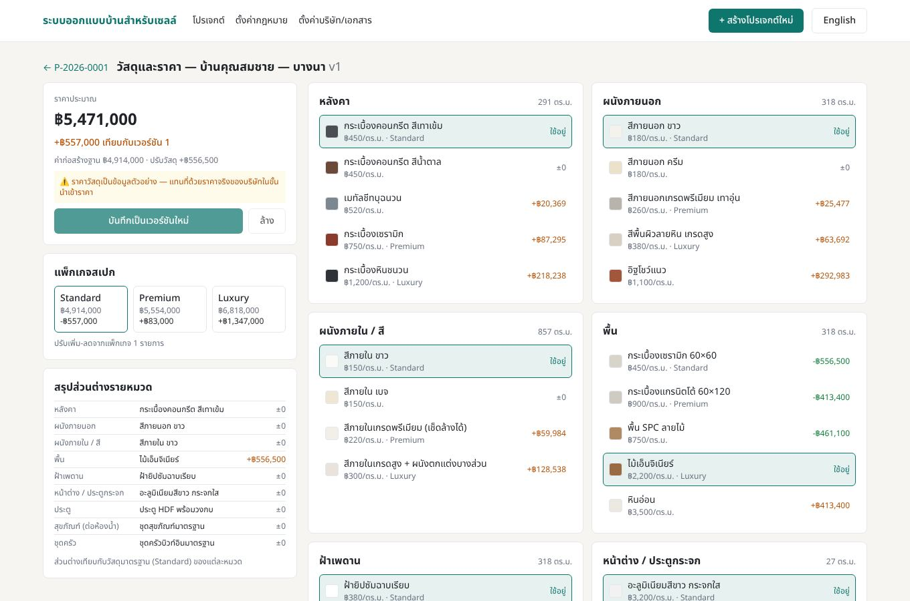
- แพ็กเกจ Standard / Premium / Luxury กดแล้วทุกหมวดเปลี่ยนเป็นวัสดุของแพ็กเกจนั้น พร้อมแสดงราคารวมและส่วนต่าง
- เลือกวัสดุทีละหมวด หลังคา ผนัง พื้น ฝ้า หน้าต่าง ประตู สุขภัณฑ์ ชุดครัว ตัวเลขสีส้ม (+) คือแพงขึ้น สีเขียว (−) คือถูกลง เทียบกับวัสดุที่ใช้อยู่ ปริมาณคำนวณจากแปลนจริง
- ราคาประมาณ ด้านซ้ายบนแสดงยอดรวมและส่วนต่างเทียบกับเวอร์ชันที่บันทึกไว้ และ สรุปส่วนต่างรายหมวด เทียบกับวัสดุมาตรฐาน
กด บันทึกเป็นเวอร์ชันใหม่ เมื่อลูกค้าตกลงเรื่องวัสดุ รายการวัสดุนี้จะไปอยู่ในใบเสนอราคา
ระบบนี้ไม่มีภาพ 3D การทำภาพ 3D และ perspective ให้สถาปนิกนำไฟล์ DXF ไปทำต่อ (ดูหัวข้อ 11)
ตรวจกฎหมายเบื้องต้น
หน้าโปรเจกต์ ใต้แปลน · และใน 2D editor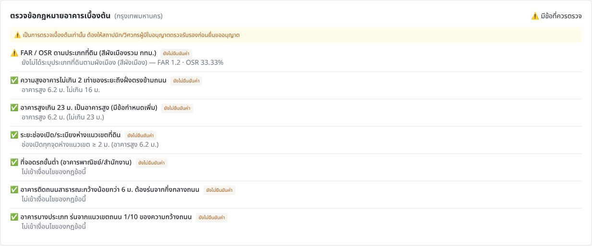
✅ ผ่าน · ⚠️ ควรตรวจ · ❌ ไม่ผ่าน กดที่แต่ละข้อเพื่อดูรายละเอียดและแหล่งอ้างอิง จุดที่ผิดจะขีดเป็นเส้นแดง/ส้มบนแปลน
ข้อที่ตรวจ: ระยะช่องเปิดและระเบียงถึงแนวเขต · ผนังทึบชิดแนวเขต · ระยะร่นจากถนน · ความสูงเทียบความกว้างถนน · อาคารสูง 23 ม. · FAR/OSR ตามสีผังเมือง · ที่จอดรถ (อาคารพาณิชย์)
เป็นการตรวจเบื้องต้นเท่านั้น ป้าย "ยังไม่ยืนยันค่า" หมายถึงสถาปนิกยังไม่ได้ยืนยันค่าของกฎข้อนั้นในหน้าตั้งค่ากฎหมาย
ขั้นอนุมัติ
หน้าโปรเจกต์ → สถานะและการอนุมัติระบบบังคับลำดับขั้นตอนเอง ข้ามขั้นไม่ได้
- เสนอลูกค้า กดเมื่อพร้อมนำเสนอแบบและราคา
- ส่วนลด ใส่จำนวนเงินที่ลูกค้าขอลด ถ้าไม่เกินเพดาน (ค่าเริ่มต้น 3%) กด ยืนยันราคา ได้เลย ถ้าเกินต้องกด ส่งหัวหน้าเซลล์อนุมัติ
- หัวหน้าเซลล์ ใส่ชื่อ แล้วกดอนุมัติหรือส่งกลับ
- ตรวจแบบ กด ไปหน้าตรวจแบบ สถาปนิกและวิศวกรคลิกบนแปลนเพื่อปักหมุดคอมเมนต์ได้ และต้องใส่ เลขใบอนุญาตประกอบวิชาชีพ ก่อนกดอนุมัติแบบ
- เซ็นสัญญา กดบันทึกเมื่อเซ็นแล้ว หลังจากนี้แบบจะถูกล็อก แก้ไม่ได้
- เตรียมยื่นขออนุญาต ทำได้เมื่อมีทั้งสถาปนิกและวิศวกรอนุมัติแบบเวอร์ชันที่เซ็นสัญญาแล้ว
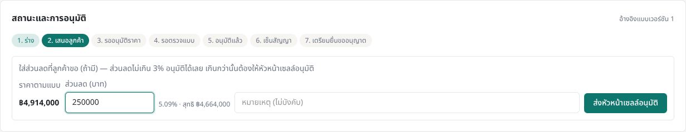
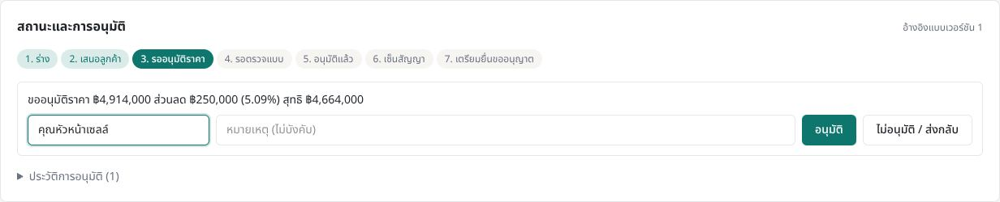
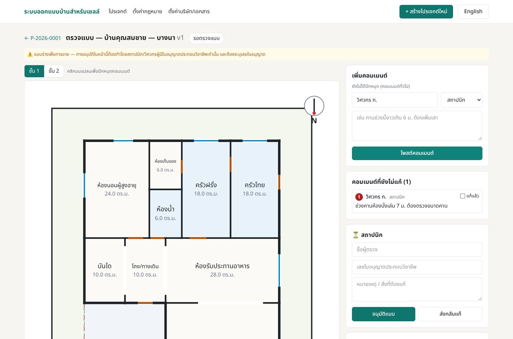
ถ้าแก้แบบระหว่างรออนุมัติ การอนุมัติเดิมจะถูกยกเลิก และสถานะกลับไปที่ "เสนอลูกค้า" เพื่อให้ราคาและแบบที่อนุมัติตรงกันเสมอ
เทียบและย้อนเวอร์ชัน
แถบเวอร์ชัน → ⇄ เทียบเวอร์ชัน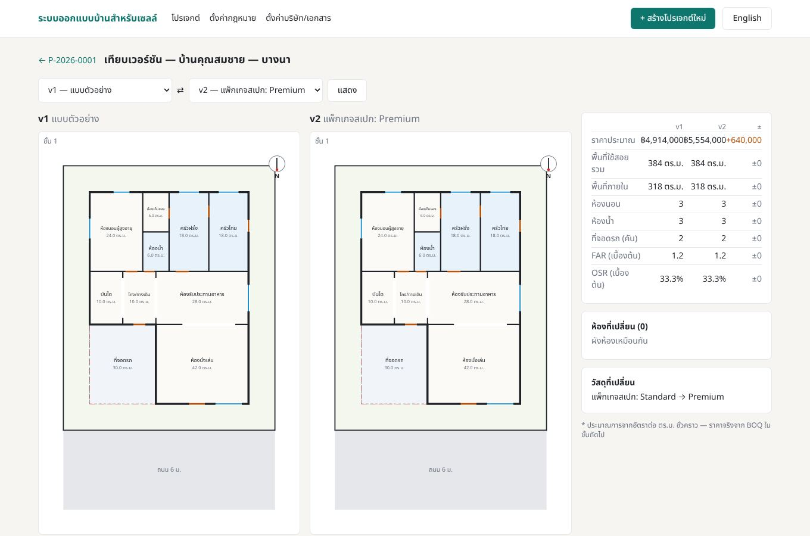
- เลือกเวอร์ชันที่จะเทียบสองฝั่ง ตารางด้านขวาแสดงส่วนต่างราคา พื้นที่ ห้องนอน/น้ำ FAR/OSR
- รายการห้องที่เพิ่ม ลบ ย้าย หรือปรับขนาด และวัสดุที่เปลี่ยน
- ถ้าลูกค้าอยากกลับไปแบบเก่า เปิดเวอร์ชันนั้นแล้วกด ↺ ย้อนกลับเป็น vN ระบบจะสร้างเวอร์ชันใหม่ ประวัติเดิมยังอยู่ครบ
ใบเสนอราคาและสัญญา
หน้าโปรเจกต์ → ใบเสนอราคา / สัญญา- เลือกภาษาของเอกสาร (ไทย/อังกฤษ) แล้วกด 📄 ออกใบเสนอราคา
- ระบบใช้แบบเวอร์ชันล่าสุด ใบจะได้เลขที่ QT-ปี-ลำดับ และ ตรึงข้อมูล ณ วันที่ออก แก้ราคาภายหลังใบเดิมก็ไม่เปลี่ยน
- กด 🖨 พิมพ์ / บันทึกเป็น PDF แล้วเลือกปลายทาง "บันทึกเป็น PDF" (Save as PDF) กระดาษ A4 แนะนำเปิด "กราฟิกพื้นหลัง" (Background graphics)
- ปุ่ม สัญญาจ้างก่อสร้าง ด้านบนเปิดสัญญาที่ระบบเติมข้อมูลลูกค้า ราคา และงวดชำระให้แล้ว
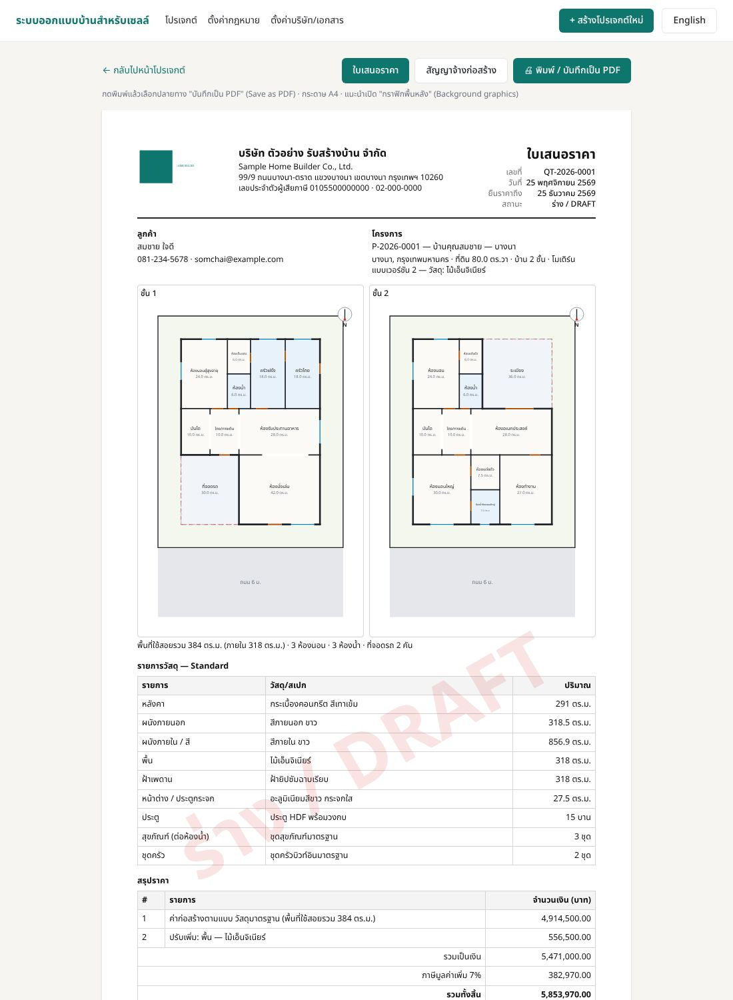
ในใบมี: โลโก้และข้อมูลบริษัท · ลูกค้าและโครงการ · แปลนทุกชั้น · รายการวัสดุ · ราคา ส่วนลด VAT ยอดรวมพร้อมตัวอักษร (บาทถ้วน) · งวดชำระ · เงื่อนไข · อ้างอิงฐานราคาและวันที่ · ช่องลงนาม
ถ้าราคายังไม่ได้รับอนุมัติตอนออกใบ ทุกหน้าจะมีลายน้ำ "ร่าง / DRAFT" เมื่ออนุมัติราคาแล้ว ให้ออกใบใหม่ จะได้ใบที่ไม่มีลายน้ำ
ส่งแบบเข้า AutoCAD
ปุ่ม ⬇ DXF (AutoCAD)ได้ไฟล์ .dxf ของแปลนทุกชั้น หน่วยมิลลิเมตร เปิดใน AutoCAD ได้ทุกเวอร์ชัน ถ้าต้องการไฟล์ DWG ให้ Save As ใน AutoCAD
| Layer | เนื้อหา |
|---|---|
A-WALL | ผนัง (เว้นช่องตรงประตูหน้าต่าง) |
A-DOOR / A-GLAZ | ประตูพร้อมเส้นวงเปิด, ประตูบานเลื่อน / หน้าต่าง |
A-STRS | ลูกขั้นบันได |
A-TEXT / A-DIMS | ชื่อห้องและพื้นที่ / เส้นบอกขนาด |
A-ROOF / A-OUTD | แนวชายคา / ที่จอดรถ ระเบียง |
C-PROP / C-SETB / C-ROAD | เขตที่ดิน / ระยะร่น / ถนน |
A-ANNO | หัวกระดาษ ทิศเหนือ หมายเหตุ "ไม่ใช่แบบก่อสร้าง" |
ข้อความไทยใช้ฟอนต์ Tahoma ถ้าเครื่องไหนแสดงไทยไม่ได้ ให้เปลี่ยนฟอนต์ของ text style ชื่อ "THAI" ใน AutoCAD เป็นฟอนต์ไทยที่มีในเครื่อง
ตั้งค่าบริษัทและเอกสาร
เมนู ตั้งค่าบริษัท/เอกสาร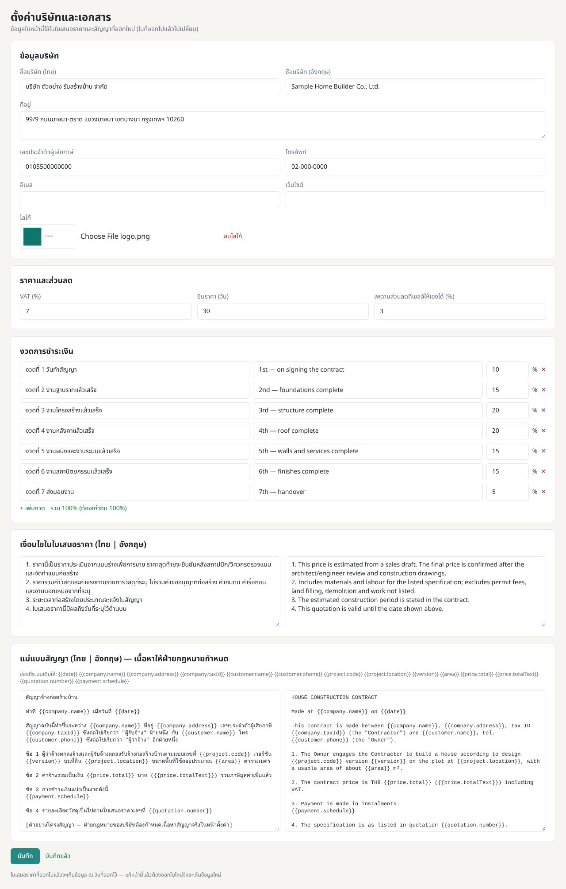
- ข้อมูลบริษัท ชื่อไทย/อังกฤษ ที่อยู่ เลขผู้เสียภาษี โทร อีเมล เว็บไซต์ และอัปโหลดโลโก้
- ราคาและส่วนลด VAT % · จำนวนวันยืนราคา · เพดานส่วนลดที่เซลล์ให้เองได้
- งวดชำระเงิน เพิ่ม/ลบงวดได้ รวมกันต้องได้ 100% พอดี
- เงื่อนไขในใบเสนอราคา และ แม่แบบสัญญา (ไทย/อังกฤษ) ในแม่แบบใส่ช่องอย่าง
{{customer.name}}{{price.total}}{{payment.schedule}}แล้วระบบจะเติมข้อมูลให้
ส่วนที่ยังขึ้นว่า "ยังเป็นข้อความตัวอย่าง" ควรแทนด้วยข้อมูลจริง โดยเฉพาะ เนื้อหาสัญญา ซึ่งต้องให้ฝ่ายกฎหมายของบริษัทเป็นผู้กำหนด การแก้หน้านี้มีผลกับใบที่ออกใหม่เท่านั้น
ตั้งค่ากฎหมายตามพื้นที่
เมนู ตั้งค่ากฎหมาย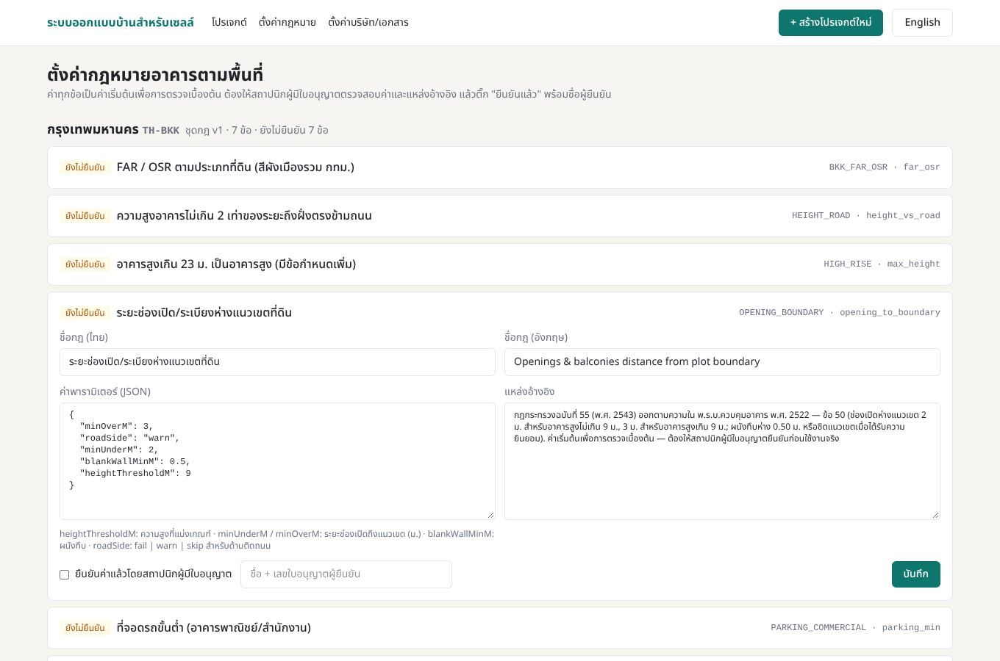
- เปิดแต่ละข้อเพื่อดูค่า แหล่งอ้างอิง และคำอธิบายพารามิเตอร์
- ให้สถาปนิกตรวจค่า แก้ถ้าจำเป็น แล้วติ๊ก ยืนยันแล้ว พร้อมใส่ชื่อและเลขใบอนุญาต
- FAR/OSR กรุงเทพฯ ต้องกรอกค่าของแต่ละสีผังเมืองตามผังเมืองรวมฉบับที่บังคับใช้ เช่น
{"zones":{"ย.3":{"far":2.5,"osrPercent":20}}} - เพิ่มจังหวัดใหม่ ได้ที่ด้านล่างของหน้า ระบบคัดลอกกฎจากพื้นที่ต้นแบบ แล้วแก้ตามเทศบัญญัติท้องถิ่น โปรเจกต์ที่ชื่อจังหวัดตรงกันจะใช้กฎชุดนั้นอัตโนมัติ
คำถามที่พบบ่อย
กดให้ AI ออกแบบแล้วขึ้นว่ายังไม่ได้ตั้งค่า API key
แจ้งผู้ดูแลระบบให้ใส่ ANTHROPIC_API_KEY ใน Vercel แล้ว deploy ใหม่
AI ออกแบบนานหรือขึ้นว่าไม่สำเร็จ
ลองกดใหม่อีกครั้ง ถ้าเกิดซ้ำบ่อย อาจต้องให้ผู้ดูแลเพิ่มเวลาประมวลผลบน Vercel
ราคาที่เห็นใช้ได้จริงไหม
ยังไม่ได้ ตอนนี้เป็นราคาประมาณจากอัตราต่อ ตร.ม. และราคาวัสดุตัวอย่าง จะใช้ราคาจริงเมื่อนำเข้าไฟล์ราคาของบริษัท
แก้แบบไม่ได้ ขึ้นว่าเซ็นสัญญาแล้ว
หลังเซ็นสัญญาแบบถูกล็อกโดยตั้งใจ การเปลี่ยนแปลงหลังเซ็นสัญญาต้องทำเป็นใบเปลี่ยนแปลงงานแยก
ใครกดอนุมัติได้บ้าง
ระบบยังไม่มีบัญชีผู้ใช้แยกคน จึงตรวจไม่ได้ว่าผู้กดเป็นใคร แต่บังคับให้ใส่ชื่อและเลขใบอนุญาตทุกครั้ง และเก็บไว้ในประวัติการอนุมัติ
ติดตั้งระบบ (สำหรับผู้ดูแล)
ขั้นตอนติดตั้งบน Vercel
- Vercel → Add New → Project → เลือก repo
autsadayut1996/homeacitech(ไม่ต้องแก้ Build Command ระบบใช้สคริปต์vercel-buildเอง) - แท็บ Storage → สร้าง Neon (Postgres) → Connect กับโปรเจกต์ ระบบอ่านตัวแปรฐานข้อมูลที่ Neon ตั้งให้ได้เอง ไม่ต้องตั้ง
DIRECT_URL - Settings → Environment Variables:
APP_PASSWORD(รหัสผ่านเข้าเว็บ) และANTHROPIC_API_KEY - Deployments → ⋯ → Redeploy หลังเพิ่มฐานข้อมูลหรือตัวแปร
- ใส่ข้อมูลตั้งต้นครั้งเดียว จากเครื่องที่มี Node.js:
DATABASE_URL="ค่า DIRECT_URL" npx prisma db seed
คำสั่งนี้ลบข้อมูลเดิมทั้งหมดก่อนใส่ข้อมูลตัวอย่าง รันครั้งเดียวตอนเริ่มเท่านั้น